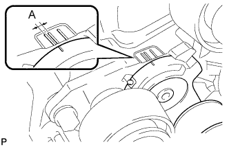

ПРИВОДНОЙ РЕМЕНЬ > УСТАНОВКА |
| 1. УСТАНОВИТЕ ПОЛИКЛИНОВОЙ РЕМЕНЬ ВЕНТИЛЯТОРА И ГЕНЕРАТОРА |
Поверните шкив натяжителя по часовой стрелке с помощью установочного болта шкива, а затем установите поликлиновой ремень.
| *1 | Шкив коленчатого вала | *2 | Шкив вентилятора |
| *3 | Генератор | *4 | Опорный шкив № 2 |
| *5 | Опорный шкив № 3 | *6 | Компрессор системы кондиционирования |
| *7 | Вязкостный подогреватель | - | - |
| *a | Тип A | *b | Тип C |
| *c | Тип B | *d | Тип D |
|  |
Удостоверьтесь, что индикаторная метка натяжителя располагается в зоне A, как показано на рисунке.
| 2. УСТАНОВИТЕ ПЕРЕДНИЙ КРОНШТЕЙН ОТОПИТЕЛЯ (для автомобилей, предназначенных для эксплуатации в холодном климате) |
Установите передний кронштейн подогревателя и закрепите его 2 болтами.
| 3. УСТАНОВИТЕ ЗАЩИТУ КАРТЕРА ДВИГАТЕЛЯ № 1 В СБОРЕ |
Установите защиту картера двигателя № 1 и закрепите ее 4 болтами.
| 4. УСТАНОВИТЕ НИЖНЮЮ ОБЛИЦОВКУ ПЕРЕДНЕГО БАМПЕРА |
Установите нижнюю накладку переднего бампера и закрепите ее фиксатором и 5 болтами.